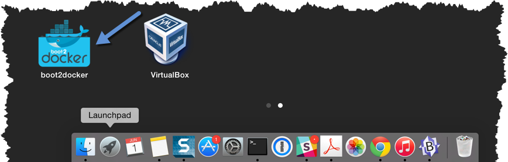
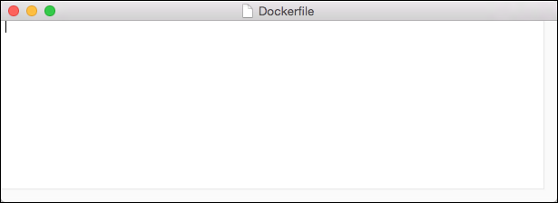
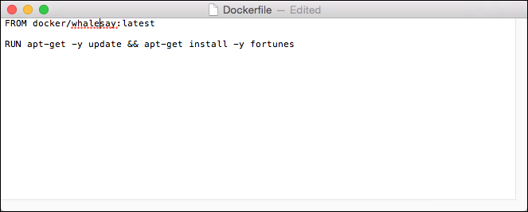
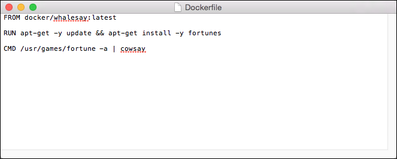

Build your own image
The whalesay image could be improved. It would be nice if you didn’t have to
think of something to say. And you type a lot to get whalesay to talk.
docker run docker/whalesay cowsay boo-boo
In this next section, you will improve the whalesay image by building a new version that “talks on its own” and requires fewer words to run.
Step 1: Write a Dockerfile
In this step, you use the Mac TextEdit program to write a short Dockerfile. A Dockerfile describes the software that is “baked” into an image. It isn’t just ingredients tho, it can tell the software what environment to use or what commands to run. Your recipe is going to be very short.
If you don’t already have a terminal open, open one now:
Open the Launchpad and locate the Docker Quickstart Terminal icon.

Click the icon to launch a Docker Quickstart Terminal.
Place your cursor at the prompt in the Docker Quickstart Terminal.
Make a new directory by typing
mkdir mydockerbuildand pressing RETURN.$ mkdir mydockerbuildThis directory serves as the “context” for your build. The context just means it contains all the things you need to build your image.
Change to your new directory.
$ cd mydockerbuildRight now the directory is empty.
Create a Dockerfile in the directory by typing
touch Dockerfileand pressing RETURN.$ touch DockerfileThe command appears to do nothing but it actually creates the Dockerfile in the current directory. Just type
ls Dockerfileto see it.$ ls Dockerfile DockerfileNow, type the
open -e Dockerfileto open the file in Mac’s TextEdit program.Your Mac opens the TextEdit program with the empty Dockerfile.

Type
FROM docker/whalesay:latestline into the open file.Now, it should look like this.

The
FROMkeyword tells Docker which image your image is based on. You are basing your new work on the existingwhalesayimage.Now, add the
fortunesprogram to the image.
The
fortunesprogram has a command that prints out wise sayings for our whale to say. So, the first step is to install it. This line adds thefortuneprogram using theapt-getprogram. If these sound all very cryptic to you, don’t worry. As long as you type the words correctly, they will work for you!Once the image has the software it needs, you instruct the software to run when the image is loaded.

This line tells the
fortuneprogram to send its nifty quotes to thecowsayprogram.Save your work and the Dockerfile by choosing File > Save from the TextEdit menu or by pressing CMD + S on your keyboard.
At this point, you have all your software ingredients and behaviors described in a Dockerfile. You are ready to build a new image.
Step 2: Build an image from your Dockerfile
Place your cursor back in your Docker Quickstart Terminal.
Make sure the Dockerfile is in the current directory by typing
cat Dockerfile$ cat Dockerfile FROM docker/whalesay:latest RUN apt-get -y update && apt-get install -y fortunes CMD /usr/games/fortune -a | cowsayNow, build your new image by typing the
docker build -t docker-whale .command in your terminal (don’t forget the . period).$ docker build -t docker-whale . Sending build context to Docker daemon 158.8 MB ...snip... Removing intermediate container a8e6faa88df3 Successfully built 7d9495d03763The command takes several seconds to run and reports its outcome. Before you do anything with the new image, take a minute to learn about the Dockerfile build process.
Step 3: Learn about the build process
The docker build -t docker-whale . command takes the Dockerfile in the
current directory, and builds an image called docker-whale on your local
machine. The command takes about a minute and its output looks really long and
complex. In this section, you learn what each message means.
First Docker checks to make sure it has everything it needs to build.
Sending build context to Docker daemon 158.8 MB
Then, Docker loads with the whalesay image. It already has this image
locally as you might recall from the last page. So, Docker doesn’t need to
download it.
Step 0 : FROM docker/whalesay:latest
---> fb434121fc77
Docker moves onto the next step which is to update the apt-get package
manager. This takes a lot of lines, no need to list them all again here.
Step 1 : RUN apt-get -y update && apt-get install -y fortunes
---> Running in 27d224dfa5b2
Ign http://archive.ubuntu.com trusty InRelease
Ign http://archive.ubuntu.com trusty-updates InRelease
Ign http://archive.ubuntu.com trusty-security InRelease
Hit http://archive.ubuntu.com trusty Release.gpg
....snip...
Get:15 http://archive.ubuntu.com trusty-security/restricted amd64 Packages [14.8 kB]
Get:16 http://archive.ubuntu.com trusty-security/universe amd64 Packages [134 kB]
Reading package lists...
---> eb06e47a01d2
Then, Docker installs the new fortunes software.
Removing intermediate container e2a84b5f390f
Step 2 : RUN apt-get install -y fortunes
---> Running in 23aa52c1897c
Reading package lists...
Building dependency tree...
Reading state information...
The following extra packages will be installed:
fortune-mod fortunes-min librecode0
Suggested packages:
x11-utils bsdmainutils
The following NEW packages will be installed:
fortune-mod fortunes fortunes-min librecode0
0 upgraded, 4 newly installed, 0 to remove and 3 not upgraded.
Need to get 1961 kB of archives.
After this operation, 4817 kB of additional disk space will be used.
Get:1 http://archive.ubuntu.com/ubuntu/ trusty/main librecode0 amd64 3.6-21 [771 kB]
...snip......
Setting up fortunes (1:1.99.1-7) ...
Processing triggers for libc-bin (2.19-0ubuntu6.6) ...
---> c81071adeeb5
Removing intermediate container 23aa52c1897c
Finally, Docker finishes the build and reports its outcome.
Step 3 : CMD /usr/games/fortune -a | cowsay
---> Running in a8e6faa88df3
---> 7d9495d03763
Removing intermediate container a8e6faa88df3
Successfully built 7d9495d03763
Step 4: Run your new docker-whale
In this step, you verify the new images is on your computer and then you run your new image.
If it isn’t already there, place your cursor at the prompt in the Docker Quickstart Terminal window.
Type
docker imagesand press RETURN.This command, you might remember, lists the images you have locally.
$ docker images REPOSITORY TAG IMAGE ID CREATED VIRTUAL SIZE docker-whale latest 7d9495d03763 4 minutes ago 273.7 MB docker/whalesay latest fb434121fc77 4 hours ago 247 MB hello-world latest 91c95931e552 5 weeks ago 910 BRun your new image by typing
docker run docker-whaleand pressing RETURN.$ docker run docker-whale _________________________________________ / "He was a modest, good-humored boy. It \ \ was Oxford that made him insufferable." / ----------------------------------------- \ \ \ ## . ## ## ## == ## ## ## ## === /""""""""""""""""___/ === ~~~ {~~ ~~~~ ~~~ ~~~~ ~~ ~ / ===- ~~~ \______ o __/ \ \ __/ \____\______/
As you can see, you’ve made the whale a lot smarter. It finds its own things to say and the command line is a lot shorter! You may also notice that Docker didn’t have to download anything. That is because the image was built locally and is already available.
Where to go next
On this page, you learned to build an image by writing your own Dockerfile. You ran your image in a container. You also just used Linux from your Mac yet again. In the next section, you take the first step in sharing your image by creating a Docker Hub account.